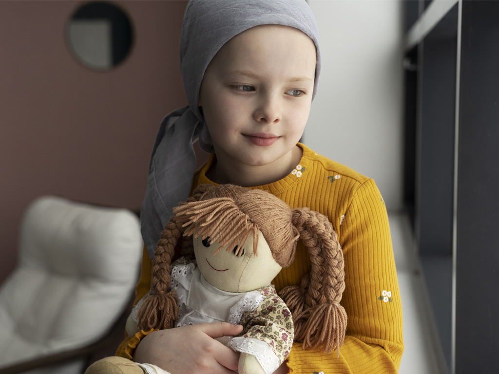
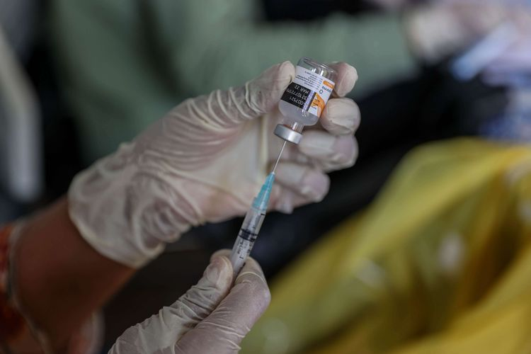

Home
Tentang Kami
Layanan
Berita
Artikel
Kontak
Berita
Terkini
Berita Seputar Rumah Sakit Mardi Waluyo
Berisi tentang berita - berita kesehatan dan tips and trick hidup sehat
Berita Lainnya

Hari Kanker Anak Sedunia
Selengkapnya

Capaian Vaksinasi Covid-19
Selengkapnya
Menjaga Tubuh di Bulan Puasa
Selengkapnya
Tak Semua Kolesterol Jahat
Selengkapnya